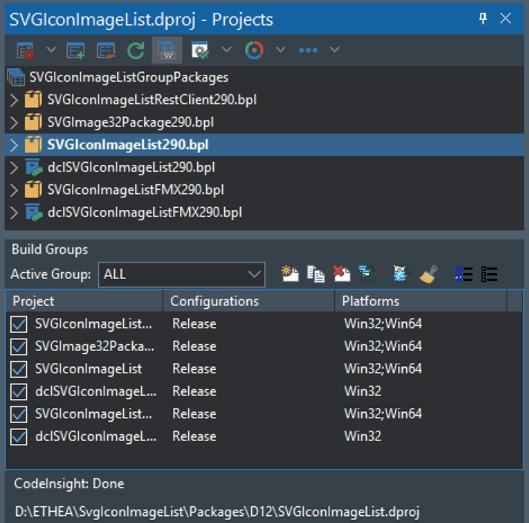
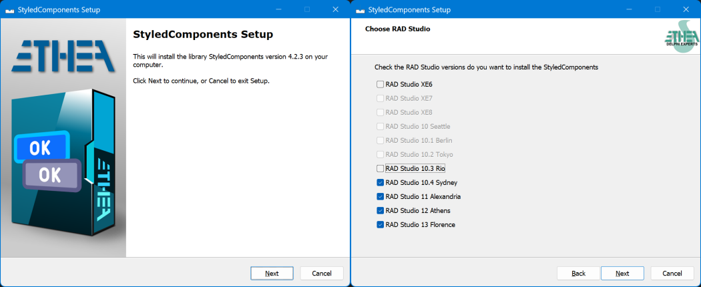

Copyright © 2024-2026 Ethea S.r.l.
Original Code is Copyright © 2021-2026 Skia4Delphi Project.
Use of this source code is governed by the MIT license.

Many developers of Delphi components/libraries release their sources on Git-Hub, providing instructions for manually installing the packages.
Using these scripts for InnoSetup Compiler it is possible to create an “automatic” Setup capable of:
During an update, Setup is also capable to:
After the installation, the components/libraries are available into the IDE of Delphi and ready to use!
Prerequisites: download and install latest Inno Setup Compiler
Verify to have this structure:
Setup
│ Setup.iss
│ WizClassicImage.bmp
│ WizClassicSmallImage.bmp
└─\InnoSetupScripts
│ └─\Languages
│ Default.isl
│ Italian.isl
│ ...
└───\Scripts
│ Setup.Preprocessor.ClearFiles.bat
└───\Source
│ Setup.Main.inc
│ RADStudio.inc
│ ...
└───\Style
│ Amakrits.vsf
│ ...
│ YellowGraphite.vsf
│ Setup.Styles.dll
The Setup scripts automatically search in your Package folder all the packages to install, inside a GroupProject file.
You must collect your packages in PackageGroups.
Into every Package Group you must create a “Build group” called “ALL” in this way:
Open the PackageGroup file (.groupproj)
Click tothe Icon “Show Build Groups Pane” in the toolbar
In the “Build Groups Panel”, click to the icon “Create a new build group”
Input “ALL” as the name of the Build Group
All of your packages are created and selected by default
Change the column “Configurations” to include Release (and also Debug if you want to provide also .dcu in debug mode)
Change the column “Platforms” to include Win64 (only for run-time packages)
This is an example of the “Build Groups Panel”:

Check in your .dproj xml file, if contains the correct “ProjectVersion” number, because the scripts use it to known the correct Delphi Version.
for Example, for Delphi 11, ProjectVersion must be between 19.3 and 19.5.
<Project xmlns="http://schemas.microsoft.com/developer/msbuild/2003">
<PropertyGroup>
<ProjectGuid>{00000000-0000-0000-0000-000000000000}</ProjectGuid>
<MainSource>PackageName.dpk</MainSource>
<ProjectVersion>19.5</ProjectVersion>
Use this table for the correct “ProjectVersion” of every Delphi versions:
| RAD Studio Version | Min ProjectVersion | Max ProjectVersion | LibSuffix** |
|---|---|---|---|
| RAD Studio XE3 | 14.0 | 14.4 | 170 |
| RAD Studio XE6 | 15.1 | 15.4 | 200 |
| RAD Studio XE7 | 16.0 | 16.1 | 210 |
| RAD Studio XE8 | 17.1 | 17.2 | 220 |
| RAD Studio 10.0 Seattle | 18.0 | 18.1* | 230 |
| RAD Studio 10.1 Berlin | 18.1* | 18.2* | 240 |
| RAD Studio 10.2 Tokyo | 18.2* | 18.4 | 250 |
| RAD Studio 10.3 Rio | 18.5 | 18.8 | 260 |
| RAD Studio 10.4 Sydney | 19.0 | 19.2 | 270 or $(Auto) |
| RAD Studio 11 Alexandria | 19.3 | 19.5 | 280 or $(Auto) |
| RAD Studio 12 Athens | 20.1 | 20.3 | 290 or $(Auto) |
| RAD Studio 13 Florence | 20.4 | 20.5 | 370 or $(Auto) |
*In case of conflict the script searches for Package Version** (LibSuffix), so it is recommended to use “standard” Lib Suffix values.
It is recommended to use version 20.3 for RAD Studio 12 and version greather than 20.3 for RAD Studio 13 to avoid the conflict of version 20.3 used by both Delphi 12.3 and Delphi 13.0
If you need other versions not included in this table you must edit RADStudio.inc file to include them in:
procedure _InitializationUnitRADStudio
or open an Issue for support them.
Build and Run Setup.iss to check your installation and debug the Setup.
Check your “graphics” in first page (WizClassicImage.bmp) and in another pages (WizClassicSmallImage.bmp)
Check if the Setup acquire your Delphi versions available.

If you have some problems to Build and install packages read carefully the log provided by the installer.
After the installation check your Evironment Variable in Delphi IDE and Search Paths added by the installer.
License MIT-License
License MIT-License
18 Sep 2026: version 1.2.4
20 Mar 2026: version 1.2.3
21 Feb 2026: version 1.2.2
1 Jan 2026: version 1.2.1
18 Aug 2025: version 1.2.0
27 Feb 2025: version 1.1.0
2 Jan 2025: version 1.0.0